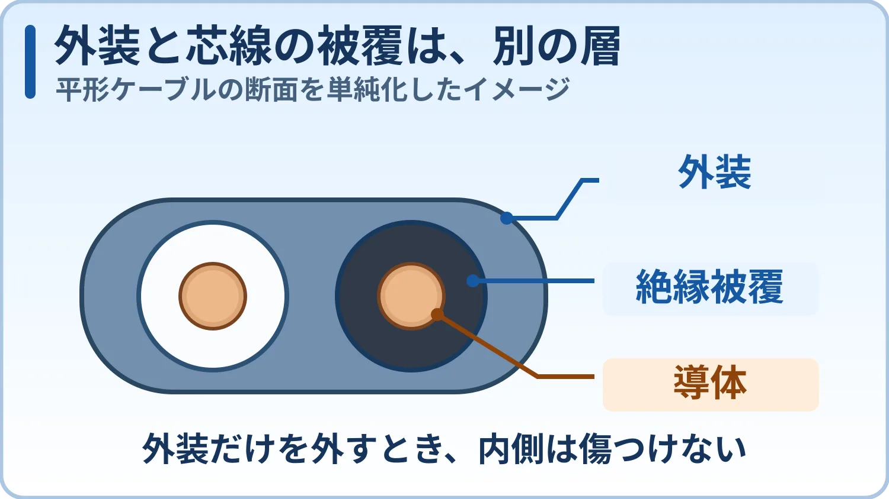
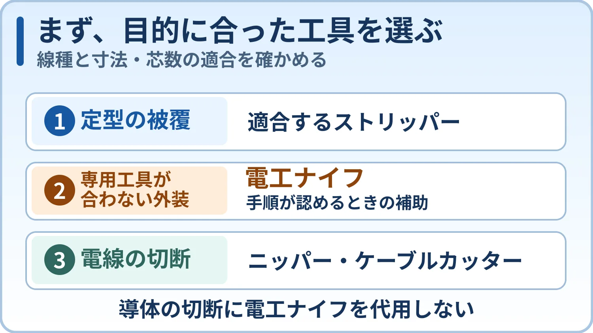
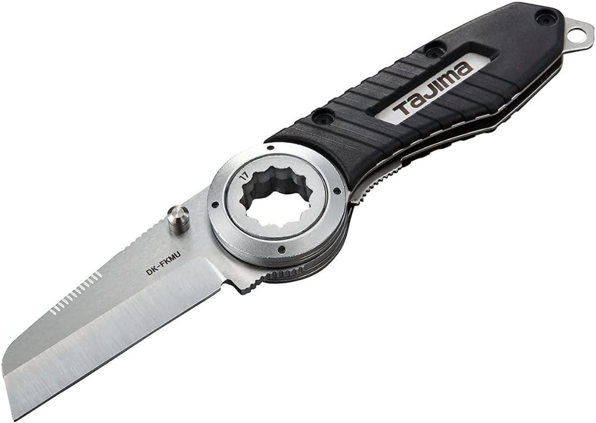
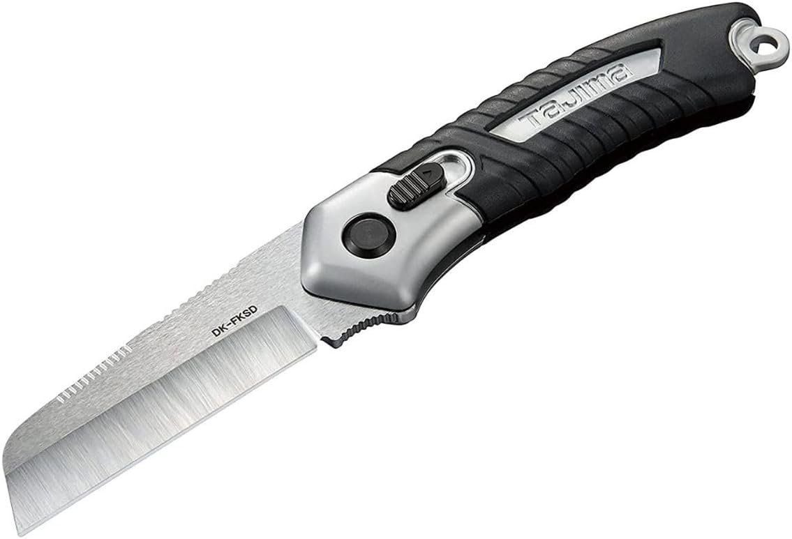
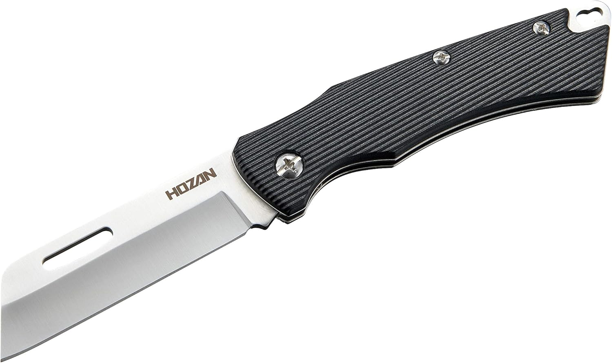
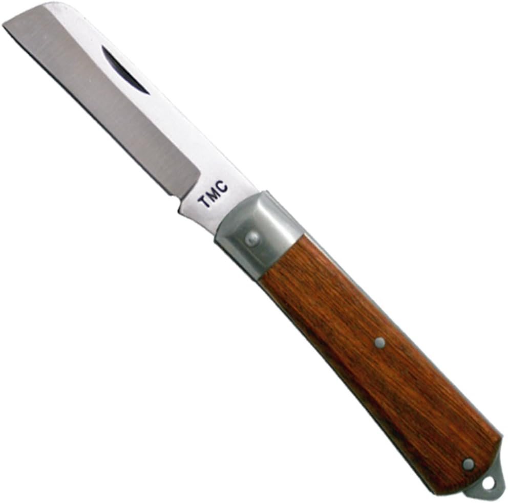

向いている人
- 大きなケーブルの外装を扱う人
- 外装と、その内側の絶縁を見分けたい人
- ストリッパーだけでは作業が詰まりやすい人
最終内容更新：
ケーブルの一番外側を包むのが外装（シース）、銅などの導体を1本ずつ覆うのが芯線の絶縁被覆です。外装だけを外すとき、内側の絶縁被覆と導体は傷つけません。
同じ外装でも、平形VVFや丸形のケーブルでは工具の適合が異なります。まずケーブルの表示から線種・寸法・芯数を確かめ、加工する層と工具の対応を確認します。

平形VVF／EM-EEFの一部には、外装用と芯線被覆用の機能が別になったVVFストリッパーがあります。丸形や太いケーブルでも、まず指定の外装工具を確認し、太さだけで電工ナイフを選びません。

先輩「外装」と「芯線の被覆」を分けて考えると、工具を選びやすいよ。

後輩じゃあ、ストリッパーで全部足りる現場なら急いで買わなくてもいいんですね。
先輩そう。専用工具の適合から見よう。電工ナイフは、外装処理に必要で現場の手順が認める場合の補助だよ。
見分ける順は「どの層か」「どんなケーブルか」「剥くのか、切断するのか」です。外装が厚いというだけで刃物を選びません。

| やりたいこと | 先に確認する工具 |
|---|---|
| 平形VVFなどの定型加工 | VVF用ストリッパー。メーカー表で線種・芯径・芯数と、外装／芯線被覆のどちらに対応するかを確認。 |
| 丸形ケーブル・太物の外装 | ケーブルの仕様と指定の外装ストリッパーを確認。専用工具が合わない場合も自己判断せず、電工ナイフの使用を認める作業手順があるか確認。 |
| 芯線1本の絶縁を剥く | 単線・より線の別とサイズに合うワイヤーストリッパー。芯径（mm）と公称断面積（mm²）を取り違えない。 |
| 電線を切断する | 材質・寸法に対応するニッパーやケーブルカッター。電工ナイフでは導体を切らない。 |
一般的な薄刃のカッターナイフは、電線の加工中に刃がぶれたり滑ったりするおそれがあります。電工ナイフや専用工具と同じ扱いにしません。
通電中は使いません。設備では有資格・有権限の担当者が、承認された手順で停電と無電圧を確認してから作業します。材料を安定させ、刃の進む先に手や体を置きません。刃物用の耐切創手袋など、メーカー・現場の指定保護具を使用します。手袋やロックは活線作業を可能にするものではありません。
内側の絶縁や導体に傷が入った、または傷の疑いがある場合は、そのまま使いません。担当者が手順に沿って処置します。
電工ナイフは、機能の多さだけでなく、携帯性・安全性・替刃運用のしやすさで選びます。
| 商品名 | 主な用途 | 特徴 | 導入タイミング |
|---|---|---|---|
| タジマ DK-FKMU | 多機能付き折込式 | 刃の使用時ロック、工具補助機能 | 補助機能も必要なとき |
| タジマ DK-FKSD | 折込式 | 使用時・収納時のロック | 比較した2機種では軽量を優先するとき |
| ホーザン Z-680 | 刃先管理しながらの継続運用 | 替刃式で長期運用に向く | 追加導入〜長期主力 |
| 豊光 No.633 | 出番が限定的な現場の補助作業 | 折畳式として製品掲載。ロック等は未確認 | 仕様を確認してから判断 |
補助機能ならDK-FKMU、2機種間で軽さを比べるならDK-FKSD、交換できる刃ならZ-680。仕様を確認できない候補を、用途や安全機構の推測で選びません。
順位ではなく、使う機能を先に決めます。メーカーから確認できた特徴と、未確認の項目を分けています。

メーカー公称188 g。刃の使用中に閉じないロックと、仮締め用のソケット機構を備える折込式です。
補助機能まで必要か、持ち歩くときに重量と収納が合うかを比べます。
AmazonでDK-FKMUを見る
メーカー公称107 g。使用中に刃が閉じず、収納時に刃が出ないロック機構を備える折込式です。
メーカー公称重量でDK-FKMUより軽く、ナイフ中心の用途で選ぶときの候補です。
AmazonでDK-FKSDを見る
メーカー資料ではステンレス替刃式。交換用としてZ-680-1が案内されています。
刃の交換や調整は自己流で行わず、付属の説明書を確認します。
AmazonでZ-680を見る
既掲載の折畳式候補です。確認できるメーカー個別資料がなく、ロック、適合用途、替刃の有無は断定しません。
購入を検討する場合は、現品や最新の説明書で必要な仕様を確認します。
AmazonでNo.633を見る線種・寸法と加工する層に合う専用工具があれば、先にそちらを選びます。電工ナイフを使う場面が残ったら、ロックや収納、替刃など実際に必要な機能を比べます。
折込式を比べるなら、仮締めなどの補助機能の要否でDK-FKMUとDK-FKSDを見分けます。
シンプルな折込式のDK-FKSDが候補になります。
替刃運用しやすいZ-680を見ておくと、刃先管理がしやすいです。
線種に合うストリッパーで足りるなら、追加購入を急ぐ必要はありません。
後輩電工ナイフって、最初から必ず持つというより、ストリッパーで足りない場面が増えたら追加する感じですね。
先輩うん。必要な現場ではかなり便利だけど、刃物だから安全に扱えることが前提。用途がはっきりしてから選ぶといいよ。
A. 加工する層・線種・寸法に合うストリッパーが先です。専用工具で扱いにくい外装があり、手順で認められているときに電工ナイフを検討します。
A. 必須とは限りません。定型作業中心なら出番は限定的で、加工幅が広い現場ほど価値が上がります。
A. 切断なら、材質と寸法に合うニッパーやケーブルカッターが役割を持ちます。被覆を剥くときは切断工具ではなく、加工する層に適合した工具を選びます。
A. 通電中は使いません。作業の前に、どの層を外し、どこを残すかを確かめ、メーカーと現場の安全手順・保護具の指定を守ります。内側の絶縁や導体に傷が疑われるときは、そのまま使いません。
公式資料確認：。
※当サイトはAmazonアソシエイト・プログラムに参加しており、適格販売により収入を得ています。